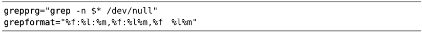
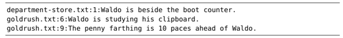

）。而‘grepformat’ 选项则指示Vim如何解析来自:grep命令的输出结果（参见:h 'grepformat'）。在Unix系统中，这些缺省的设置如下所示：
）。而‘grepformat’ 选项则指示Vim如何解析来自:grep命令的输出结果（参见:h 'grepformat'）。在Unix系统中，这些缺省的设置如下所示：技巧109定制grep程序
Vim的:grep命令是外部grep程序的包装器。通过配置 ‘grepprg’与‘grepformat’这两个选项，我们可以对 Vim 查找的行为进行定制。首先，我们将检查这两个选项的缺省设置，然后，将会看到如何修改这些设置，从而将查找任务外包给其他合适的程序。
Vim缺省的grep设置
当我们执行Vim的:grep命令时，‘grepprg’选项负责指定所调用的shell程序（参见:h 'grepprg'）。而‘grepformat’ 选项则指示Vim如何解析来自:grep命令的输出结果（参见:h 'grepformat'）。在Unix系统中，这些缺省的设置如下所示：

其中，出现在‘grepprg’选项中的符号$*表示占位符，最终它将被提供给:grep命令的参数所代替。
‘grepformat’选项由一串字符组成，其内容包括用于解析:grep执行结果的符号。‘grepformat’选项中的特殊标识符，与我们在用Nodelint的输出结果填充Ouickfix列表中所见的‘errorformat’是一样的。要了解完整的列表，请查阅:h errorformat。
接下来让我们看一看，缺省的 %f:%1 %m格式是如何解析来自grep的输出结果的：

对于每一项记录，%f表示文件名（如本例中的department-store.txt或者goldrush.txt），%l表示行号，而 %m则表示匹配行的文本。
‘grepformat’字符串可以包含以逗号分隔的多组格式。缺省设置也能匹配%f:%l%m 或 %f %l%m，不过Vim将采用第一种格式匹配来自:grep的输出结果。
通过‘:grep’调用ack
ack作为可取代grep的程序，尤其受到程序员的青睐。如果你想了解它与grep的对比情况，请访问其首页，而且一定要看这个网址http://betterthangrep.com。
首先，我们需要安装ack。在Ubuntu中，可以通过以下命令完成：
➾ $ sudo apt-get install ack-grep
➾ $ sudo ln -s /usr/bin/ack-grep /usr/local/bin/ack
其中，第一条命令负责安装ack程序，让我们可以用ack-grep调用它。第二条命令负责创建符号链接，让我们只需通过ack即可实现调用。
在OS X中，我们可以通过Homebrew进行安装：
➾ $ brew install ack
让我们看看如何定制‘grepprg’与‘grepformat’这两个选项，实现让:grep调用ack，而不是缺省的grep。在缺省情况下，ack会用单独的一行列出文件名，然后再从下一行起，列出此文件匹配行的行号及内容，如下所示：
➾ $ ack Waldo *
《 department-store.txt
1:Waldo is beside the boot counter.
goldrush.txt
6:Waldo is studying his clipboard.
9:The penny farthing is 10 paces ahead of Waldo.
我们可以方便地改变ack的输出格式，即通过在运行ack时加入-nogroup参数，实现类似grep -n的效果：
➾ $ ack --nogroup Waldo *
《 department-store.txt:1:Waldo is beside the boot counter.
goldrush.txt:6:Waldo is studying his clipboard.
goldrush.txt:9:The penny farthing is 10 paces ahead of Waldo.
事实证明，输出的结果的确与grep -n 的格式吻合，另外，由于Vim缺省的‘grepformat’选项已经知道如何去解析这些内容，因此，我们没必要对它进行修改。综上所述，采用ack代替grep的最简单方法就是把‘grepprg’设成以下值：
➾:set grepprg=ack\ --nogroup\ $*
通过ack跳转到指定的行与列
Ack还有另一项绝技。当我们采用--columm参数运行ack时，它会给出每一处匹配的行号与列号。实际结果如下所示：
➾ $ ack --nogroup --column Waldo *
《 department-store.txt:1:1:Waldo is beside the boot counter.
goldrush.txt:6:1:Waldo is studying his clipboard.
goldrush.txt:9:41:The penny farthing is 10 paces ahead of Waldo.
如果我们能够通过修改‘grepformat’选项，将这项额外的信息提取出来的话，在浏览查找结果时，就可以跳转到每一处匹配的精确位置，而不仅是准确的行。通过以下设置，即可轻松实现这一功能：
➾:set grepprg=ack\ --nogroup\ --column\ $*
➾:set grepformat=%f:%l:%c:%m
其中，符号%c表示列号。
其他grep插件
对于Vim来说，将跨文件搜索的工作外包给外部程序很容易。只需修改‘grepprg’与‘grepformat’这两项设置并执行:grep即可。这样一来，我们的结果就会顺理成章地出现在quickfix列表中。实际上，不论Vim调用的是哪种程序，其接口基本上是统一的。
但程序之间毕竟存在着一些重要的差异。例如，grep采用的是POSIX风格的正则表达式，而ack则采用的是Perl风格的正则表达式。如果 :grep命令在后台调用ack，可能会引起误导。与其这样，你为什么不创建一条名为:Ack的命令，使其名副其实呢？
Ack.vim(1)插件恰好符合以上需求。类似地，fugitive.vim(2)插件也为我们提供了一个名为:Ggrep的自定义命令用于执行git-grep。当然，我们还可以安装几个类似的插件，而且由于每个插件都是创建各自的自定义命令，而不是覆盖:grep命令，因此，它们彼此之间不受影响。我们再也用不着死守着一个grep程序了。
我们可以针对当前的任务，选用合适的命令。